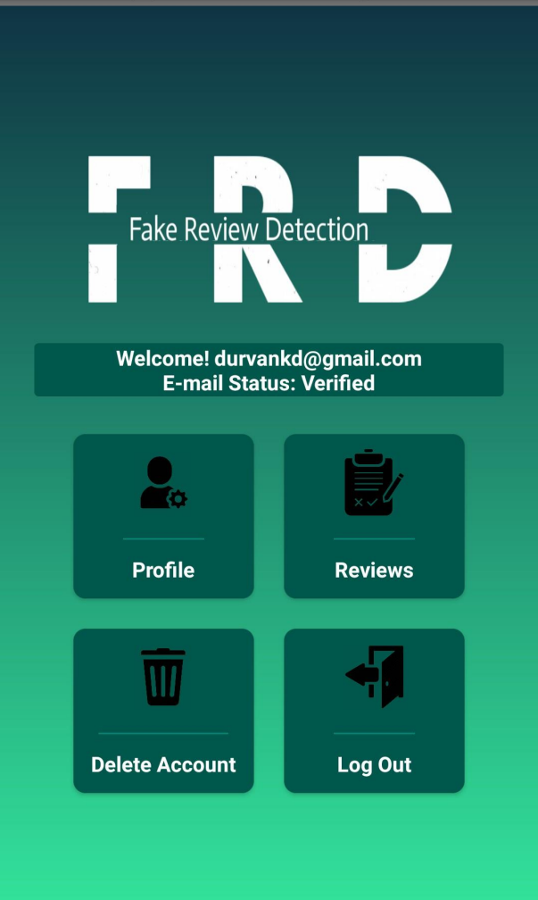

Portfolio

Fake Review Detection System
The "Review Detection System (FRD)" project combats opinion spamming by using sentiment analysis to identify and differentiate genuine and fraudulent reviews. This promotes a transparent and trustworthy online marketplace, ensuring the integrity of customer feedback and facilitating informed purchasing decisions.

Music Streaming D-App
The "Decentralized Music Streaming App using Blockchain" project revolutionizes the music streaming industry with fair compensation for artists, transparent royalty distribution, and an improved user experience. By leveraging blockchain, the app disrupts traditional models for a transparent and enjoyable streaming platform that rewards artists.